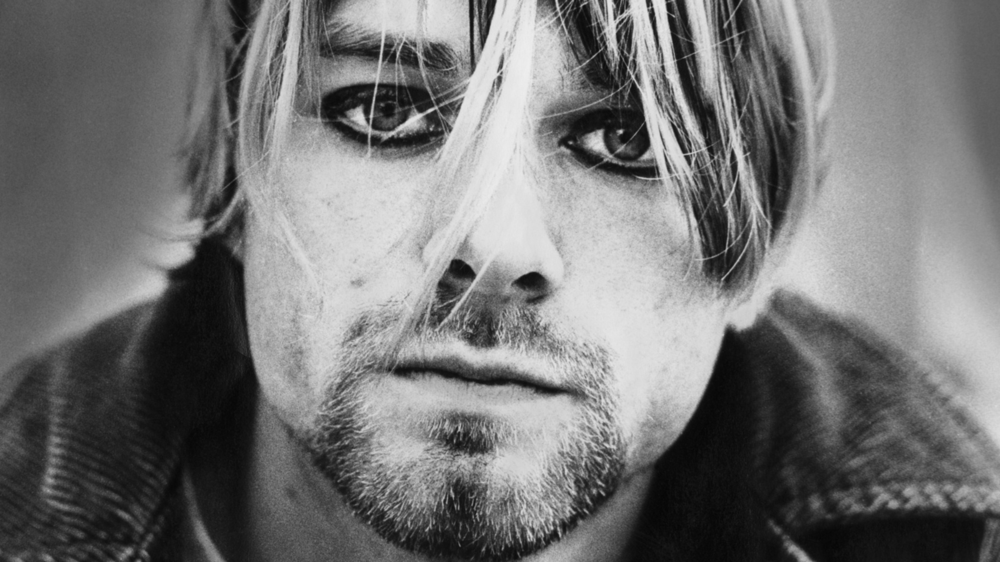

Kurt Cobain, sadly part of 27 Club
But he was an amazing musician

A Picture of Kurt Cobain from when he was alive
Timeline of Kurt Cobains Life
Mere om Kurt Cobain her.
- Jul 9, 1964. Courtney Love is born
- Feb 20, 1967. Kurt Cobain is born
- Dec 1, 1985. Kurt moves in with Jesse Read
- Dec 1, 1986. Getting his own place
- Oct 10, 1987. Kurt moves to Olympia
- Dec 1, 1989. "Bleach" is released
- Jan 12, 1990. Kurt and Courtney get together
- Sep 24, 1991. "Nevermind" is released
- Aug 18, 1992. Frances Bean is born
- Mar 3, 1994. Near death experience
- Mar 25, 1994. Intervention with Kurts substance abuse
- Mar 30, 1994. Rehab
- Apr 8, 1994. Kurt is found dead
- Jun 16, 1994. Kristen Pfaff dies
- Apr 19, 1997. Eldon Hoke dies